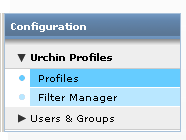
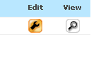
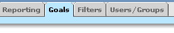
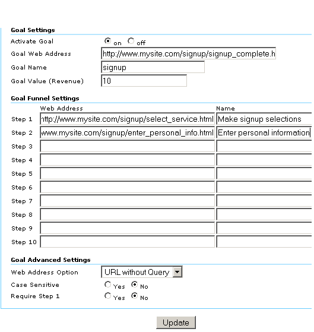

Conversiedoelen instellen
- Een doel is een webpagina die bezoekers bereiken wanneer ze een aankoop hebben gedaan of een andere gewenste actie hebben voltooid, zoals een registratie of download. Voordat Urchin de doelconversiestatistieken kan berekenen, moet u een of meer doelen instellen. Een doel wordt bepaald met de volgende gegevens:
- URL voor de doelpagina
- Geef een pagina op die alleen kan worden bereikt door een bepaald doel te behalen. Bijvoorbeeld in het geval van een registratiedoel moet de doelpagina de pagina zijn waarop de gebruiker wordt bedankt. Als uw doelpagina kan worden bereikt door bezoekers die het doel niet hebben behaald, wordt het succespercentage kunstmatig hoog gehouden.
- een naam voor het doel
- Geef een naam op die u kunt herkennen bij het bekijken van rapporten. Voorbeelden van namen die u kunt gebruiken, zijn onder andere 'e-mailaanmeldingen' en 'download van artikel ABC'.
- de gedefinieerde trechter
- U kunt maximaal tien pagina's opgeven in een gedefinieerde trechter. Deze pagina's vormen het pad dat bezoekers moeten volgen op hun weg naar de conversie van het doel. Als u deze pagina's instelt, kunt u zien hoe vaak bezoekers een doel niet halen en waar ze heengaan. Voor een e-commercedoel kunnen deze pagina's bijvoorbeeld de eerste pagina van het uitchecken (Checkout), de pagina met verzendgegevens en de pagina met creditcardgegevens zijn.
- een doelwaarde, als het doel geen e-commercetransactie is
Voor e-commercedoelen laat u het veld 'Doelwaarde' leeg, zoals hieronder wordt beschreven. Vervolgens stelt u uw ontvangstpagina voor aankopen in zoals wordt beschreven in Hoe houd ik e-commercetransacties bij?
- Voor niet-e-commercedoelen gebruikt Urchin de door u opgegeven doelwaarde om uw ROI, de gemiddelde score en andere statistieken te berekenen. Een goede manier om een waarde toe te kennen aan een doel is door te bepalen hoe vaak bezoekers die het doel bereiken, klant worden. Als uw verkoopteam bijvoorbeeld tien procent van de mensen kan vastleggen die benaderd willen worden, en uw gemiddelde transactie bedraagt € 500, kunt u wellicht € 50 (tien procent van € 500) toewijzen aan uw doel 'contact opnemen'. Maar als slechts één procent van de aanmeldingen voor de mailinglijst resulteert in een verkoop, wilt u wellicht slechts € 5 toewijzen aan het doel 'e-mailaanmeldingen'.
Stel als volgt uw doelen in:
Meld u aan bij uw Urchin 6-account en klik op Configuratie rechtsboven in het scherm.
- Klik op 'Urchin-profielen' en vervolgens op 'Profielen'.

- Klik op de knop 'Bewerken' om het profiel voor uw website te bewerken.

- Klik op het tabblad 'Doelen'.

- Bewerk een doel door op een van de vier doeltabbladen boven in het scherm te klikken. Klik vervolgens op het toverstokje in de rechterbovenhoek om de wizard 'Doel instellen' te openen.

- Selecteer in de wizard een stapnummer of 'Doel' op de tabbladen boven in het venster. Gebruik de webbrowser in de wizard om naar een pagina te gaan die u wilt instellen als een stap of doel. Als u de pagina wilt instellen als stap 1, klikt u op 'Deze pagina toevoegen als stap 1'. Herhaal deze procedure voor elke stap van uw trechter. Klik op 'Deze pagina instellen als conversiedoel' om de pagina in te stellen als het doel en sluit vervolgens de wizard.
Nadat u de wizard heeft voltooid, worden de geselecteerde pagina's weergegeven in de velden 'Stappen' en 'Webadres doel', zoals hieronder weergegeven. U kunt pagina-URL's ook rechtstreeks in het venster 'Doelen' opgeven en bewerken. 
Als u een E-commercedoel wilt opgeven, stelt u de ontvangstpagina in als doel en laat u het veld 'Doelwaarde (inkomsten)' leeg.